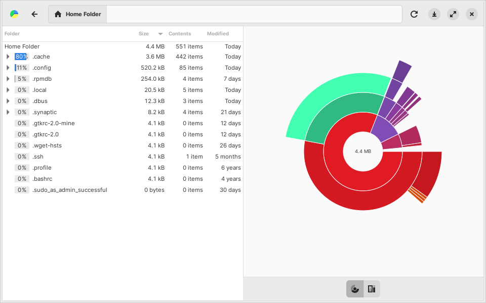

HELP: Linux Cleaner
Linux Cleaner is a modern application that offers several easy actions to check and increase hard drive space.
Features
- Clean Folders - Remove cache and thumbnails with age-based filtering
- APT Cache Cleanup
- Old files are ones that can no longer be downloaded
- All files option removes entire APT cache
- Delete Logs
- Old logs end in .gz, .old, and numbered extensions
- Filter by age in days
- Empty Trash - For selected user or all users with age filtering
- Clean Flatpak - Remove unused runtimes
- Purge Residual Configurations - From removed packages
- Scheduling - Automate cleanup (reboot, daily, weekly, monthly)
Additional Tools
- Remove unused WiFi drivers
- List and remove old kernels
- Remove system manuals in unused languages
- Disk Usage Analyzer integration
The Disk Usage Analyzer (Baobab) gives a very nice graphical display of your used space

Safety Notice
Linux Cleaner is designed to be safe and user-friendly. All operations are carefully controlled to prevent system damage. Always review selections before applying changes.
Note: While other cleanup applications like Bleachbit exist in the repositories, they have significant potential to damage your system and should only be used by advanced users. Linux Cleaner provides safer alternatives for most cleanup needs.